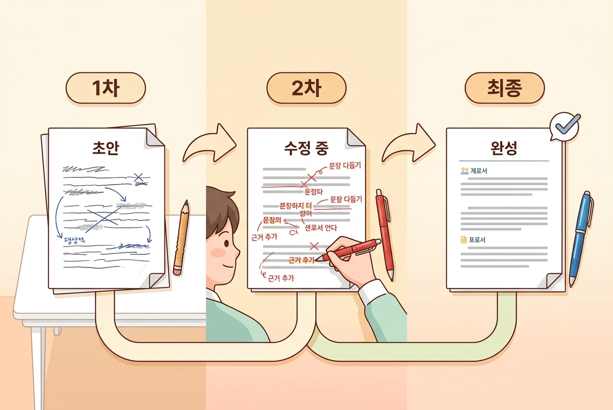

6차시: 생성하고 다듬기 — AI와 함께 완성도 높이기¶
🎯 이 장에서 배우는 것¶
- AI가 생성한 결과물을 비판적으로 검토할 수 있다
- 교육적 판단을 바탕으로 결과물을 수정·보완할 수 있다
- 반복적인 개선 과정을 통해 만족스러운 자료를 완성할 수 있다
💡 왜 이걸 배우나요?¶
5차시에서 프롬프트를 설계하고 에듀플로에 입력하는 것까지 해보셨죠? 이제 AI가 결과물을 내놓았습니다. 그런데 여기서 멈추면 어떻게 될까요?
AI가 만든 교육자료를 그대로 교실에 가져가는 것은 마치 인터넷에서 찾은 레시피를 한 번도 맛보지 않고 손님에게 내놓는 것과 같습니다. 재료가 우리 냉장고에 있는 것과 다를 수도 있고, 손님의 입맛에 안 맞을 수도 있습니다. 🍳
이번 차시는 AI가 만들어 준 '초안'을 우리 반 학생들에게 꼭 맞는 '완성본'으로 바꾸는 시간입니다. 생성 → 검토 → 수정 → 재생성, 이 순환을 직접 경험하며 "AI 활용 수업 자료 만들기"의 핵심 감각을 익혀 보겠습니다.
📚 핵심 개념¶
개념 1: 비판적 검토 — 교사의 눈으로 걸러내기¶
비유로 시작해 볼까요? 🔍
AI가 생성한 결과물을 검토하는 것은 마치 학생이 제출한 보고서에 빨간 펜으로 피드백하는 과정과 같습니다. 전체적인 구조는 괜찮은지, 내용에 오류는 없는지, 수준이 적절한지를 하나하나 살피는 것이죠. 다만 이번에는 학생이 아닌 AI가 쓴 글을 검토한다는 점만 다릅니다.
정확한 정의:
비판적 검토란 AI가 생성한 결과물을 그대로 수용하지 않고, 교육적 기준(정확성, 적절성, 난이도, 맥락)에 비추어 판단하고 걸러내는 과정입니다.
무엇을 검토해야 할까요? 아래 5가지 기준을 기억하세요:
| 검토 기준 | 점검 질문 | 흔한 문제 |
|---|---|---|
| 정확성 | 사실 관계에 오류는 없는가? | 날짜·수치 착오, 개념 혼동 |
| 적절성 | 우리 학교 교육과정에 맞는가? | 범위 벗어남, 삭제된 내용 포함 |
| 난이도 | 우리 반 학생 수준에 맞는가? | 너무 쉽거나 지나치게 어려움 |
| 맥락 | 수업 흐름과 자연스럽게 연결되는가? | 앞뒤 차시와 동떨어진 내용 |
| 윤리성 | 편향·고정관념은 없는가? | 특정 집단에 대한 편향적 표현 |
💡 꿀팁: 처음에는 표를 프린트하거나 메모장에 켜두고 하나씩 체크해 보세요. 몇 번 하다 보면 자연스럽게 "교사의 눈"이 작동합니다.
개념 2: 반복 개선 사이클 — 한 번에 완벽할 필요 없어요¶
비유로 시작해 볼까요? 🎨
도자기를 만들 때 흙을 한 번 빚어서 바로 완성하지 않잖아요? 물레 위에서 모양을 잡고, 다듬고, 마음에 안 들면 다시 주무르고… 이 과정을 반복해야 비로소 쓸 만한 그릇이 됩니다. AI와 함께 자료를 만드는 것도 똑같습니다.
정확한 정의:
반복 개선 사이클(Iterative Refinement)이란 생성 → 검토 → 수정 → 재생성을 여러 번 반복하여 결과물의 완성도를 점진적으로 높여가는 과정입니다.
이 흐름을 다이어그램으로 살펴보겠습니다:
핵심 포인트: 보통 2~3회 반복이면 충분히 쓸 만한 자료가 나옵니다. 처음부터 완벽을 기대하기보다, "1차: 뼈대 잡기 → 2차: 살 붙이기 → 3차: 마무리 다듬기"로 접근하세요.
🔨 따라하기: AI 결과물 생성하고 다듬기¶
⏱️ 수업 흐름 (총 45분)¶
| 단계 | 활동 | 시간 |
|---|---|---|
| Step 1 | 첫 번째 결과물 생성하기 | 8분 |
| Step 2 | 비판적 검토 체크리스트 적용하기 | 12분 |
| Step 3 | 수정 프롬프트로 재생성하기 | 15분 |
| Step 4 | 최종 점검 및 완성하기 | 10분 |
Step 1: 첫 번째 결과물 생성하기 ⏱️ 8분¶
5차시에서 만든 프롬프트를 에듀플로에 입력하고 첫 결과물을 받아 봅시다.
실습 예시 상황: 고1 통합과학 "생태계와 환경" 단원의 형성평가 문항 5개를 만들어 달라고 요청했다고 가정합니다.
입력 프롬프트 예시: "고등학교 1학년 통합과학, '생태계와 환경' 단원의 형성평가 객관식 5문항을 만들어 주세요. 난이도는 중하~중 수준, 성취기준 [10통과08-01]에 맞춰 주세요."
AI가 결과물을 생성하면 일단 전체를 한 번 읽어보세요. 수정하고 싶은 부분에 바로 뛰어들지 말고, 먼저 전체적인 인상을 파악하는 것이 중요합니다.
📌 이때 마음가짐: "잘 만들었네" 또는 "엉터리네"가 아니라, "어디를 고치면 쓸 수 있을까?"로 접근하세요.
Step 2: 비판적 검토 체크리스트 적용하기 ⏱️ 12분¶
앞에서 배운 5가지 검토 기준을 실제로 적용해 봅시다. 아래는 AI가 생성한 문항의 예시와 검토 결과입니다:
AI 생성 문항 예시 (발췌):
문항 3. 다음 중 생태계의 비생물적 환경 요인이 아닌 것은? ① 온도 ② 토양 ③ 분해자 ④ 빛
검토 기록 예시:
| 검토 기준 | 판단 | 메모 |
|---|---|---|
| 정확성 | ✅ | 분해자는 생물적 요인 맞음 |
| 적절성 | ✅ | 성취기준 범위 내 |
| 난이도 | ⚠️ | 너무 쉬움 — 중하 이하 수준 |
| 맥락 | ✅ | 단원 앞부분 개념 확인용으로 적절 |
| 윤리성 | ✅ | 해당 없음 |
검토 결과: 난이도를 한 단계 올릴 필요가 있습니다. 단순 분류 문제 대신, 상황 적용 문제로 바꿔 달라고 요청하면 좋겠네요.
🙋♀️ 선생님, 이런 경험 있으시죠? "AI가 만든 문제가 너무 교과서적이다"라는 느낌. 이럴 때 구체적인 수정 방향을 잡아주는 것이 바로 교사만의 역할입니다.
Step 3: 수정 프롬프트로 재생성하기 ⏱️ 15분¶
검토에서 발견한 문제점을 구체적인 수정 요청으로 바꿔 봅시다.
수정 프롬프트 작성 요령 3가지:
| 요령 | ❌ 막연한 요청 | ✅ 구체적인 요청 |
|---|---|---|
| 문제를 특정 | "좀 더 어렵게 해 주세요" | "3번 문항의 난이도를 올려 주세요" |
| 방향을 제시 | "다시 만들어 주세요" | "단순 분류 대신 실생활 상황을 적용하는 문제로 바꿔 주세요" |
| 기준을 명시 | "더 좋게 해 주세요" | "정답률 60% 수준, 보기 간 매력도가 비슷하게 해 주세요" |
실제 수정 프롬프트 예시:
"3번 문항을 수정해 주세요. 단순히 비생물적 요인을 고르는 것이 아니라, 구체적인 생태계 상황(예: 산불 후 숲의 변화)을 제시하고 비생물적 요인의 영향을 분석하는 문제로 바꿔 주세요. 난이도는 '중' 수준으로 조정해 주세요."
AI의 수정 결과 예시:
문항 3 (수정). 산불이 발생한 후 숲이 회복되는 과정에서 가장 먼저 영향을 미치는 비생물적 환경 요인으로 적절한 것은? ① 분해자의 활동 증가 ② 토양의 무기염류 변화 ③ 포식자의 이동 ④ 경쟁종의 유입
이전 문항과 비교해 보세요 — 같은 개념을 묻지만, 학생이 실제 상황에 적용해 사고해야 하는 문제로 바뀌었습니다! 🎯
💡 꿀팁: 에듀플로에서 수정 요청할 때, 이전 대화 맥락이 유지되므로 처음부터 다시 설명할 필요 없습니다. "3번 문항을 이렇게 바꿔 주세요"처럼 간결하게 요청하세요.
Step 4: 최종 점검 및 완성하기 ⏱️ 10분¶
2~3회 반복을 거쳐 대부분의 문항이 만족스러워졌다면, 최종 점검을 합니다.
최종 점검 3대 질문:
- "내가 이 자료로 수업하는 장면이 그려지는가?" — 실제 사용 상황을 머릿속으로 시뮬레이션해 보세요
- "우리 반에서 가장 어려워하는 학생도 풀 수 있는 문제가 있는가?" — 난이도 분포를 확인하세요
- "내 이름을 걸고 배포해도 괜찮은가?" — 정확성에 대한 최종 책임은 교사에게 있습니다

완성 후에는 파일로 저장하거나, 학교 LMS에 올리거나, 프린트하여 수업에 바로 활용하시면 됩니다. 🎉
⚠️ 주의할 점¶
1. AI 생성 결과물의 "그럴듯한 오류"를 조심하세요¶
AI는 틀린 내용도 매우 자연스럽게 서술합니다. 특히 숫자, 연도, 공식, 인물 정보에서 미묘한 오류가 발생하기 쉽습니다. "이상한 느낌"이 드는 부분은 반드시 교과서나 신뢰할 수 있는 자료로 교차 확인하세요.
2. 완벽을 추구하다 시간을 다 쓰지 마세요¶
수정을 5번, 10번 반복하면 물론 더 좋아지겠지만, 교사의 시간도 소중한 자원입니다. "80% 이상 만족스러우면 나머지는 내가 직접 손본다"는 기준을 세워두면 효율적입니다.
✅ 점검하기¶
1. AI가 생성한 결과물을 검토할 때 확인해야 하는 5가지 기준은 무엇인가요?
정답 확인
정확성, 적절성, 난이도, 맥락, 윤리성입니다. 각각 "사실이 맞는가?", "교육과정에 맞는가?", "학생 수준에 맞는가?", "수업 흐름에 맞는가?", "편향은 없는가?"를 점검합니다.2. "좀 더 어렵게 해 주세요"보다 효과적인 수정 프롬프트는 어떻게 작성하나요?
정답 확인
문제를 특정하고(몇 번 문항인지), 방향을 제시하고(어떤 유형으로 바꿀지), 기준을 명시하는(난이도, 정답률 등) 것이 효과적입니다. 예: "3번 문항을 실생활 상황 적용 문제로 바꾸고, 난이도를 중 수준으로 조정해 주세요."3. 반복 개선 사이클에서 교사의 핵심 역할은 무엇인가요?
정답 확인
AI가 생성한 초안을 비판적으로 검토하고, 교육적 판단에 따라 수정 방향을 결정하며, 최종 결과물에 대한 책임을 지는 것이 교사의 핵심 역할입니다. AI는 보조 도구이고, 편집장은 교사입니다.📝 인터랙티브 퀴즈¶
1. AI가 생성한 교육자료를 교실에서 사용하기 전, 교사가 반드시 해야 할 일은 무엇인가요?
2. 다음 중 수정 프롬프트로 가장 효과적인 것은?
3. 반복 개선 사이클에 대한 설명으로 올바르지 않은 것은?